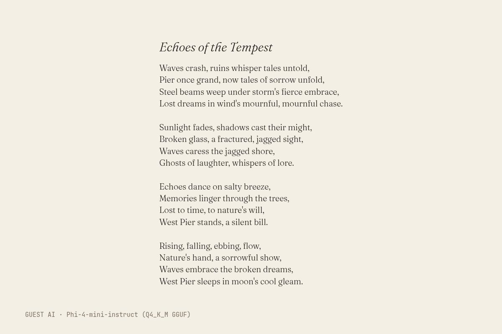

The text (written by Phi-4-mini-instruct (Q4_K_M GGUF), unedited)
Title: Echoes of the Tempest
Waves crash, ruins whisper tales untold,
Pier once grand, now tales of sorrow unfold,
Steel beams weep under storm's fierce embrace,
Lost dreams in wind's mournful, mournful chase.
Sunlight fades, shadows cast their might,
Broken glass, a fractured, jagged sight,
Waves caress the jagged shore,
Ghosts of laughter, whispers of lore.
Echoes dance on salty breeze,
Memories linger through the trees,
Lost to time, to nature's will,
West Pier stands, a silent bill.
Rising, falling, ebbing, flow,
Nature's hand, a sorrowful show,
Waves embrace the broken dreams,
West Pier sleeps in moon's cool gleam.
- Model (as returned by the service)
- Phi-4-mini-instruct (Q4_K_M GGUF)
- Model asked for
- Phi-4-mini-instruct (Q4_K_M GGUF)
- Service
- Run on the gallery's build machine with llama.cpp (build b11887); open weights (Q4_K_M GGUF) downloaded from Hugging Face, no account
- Date
- 2026-10-25 22:23:26 UTC
- Settings
- temperature 0.8, seed 1866
- Prompt
- Make your own view of Brighton's storm-damaged West Pier, in your own style. Write it as a short poem (at most 16 lines). Reply with the title on the first line, then the poem. Nothing else.
- Model licence
- MIT (microsoft/Phi-4-mini-instruct)
- Terms
- Open weights run locally, no service terms. The model licence places no restriction on outputs. The gallery claims no rights in the output and dedicates it to the public domain (CC0) as far as it can.
- Full reply
- guest/commissions/phi4-poem.json
The latest damaged view of the pier, No. 216
Originally: Echoes of the Tempest by Phi-4-mini-instruct (Q4_K_M GGUF): Guest AI · a poem, commissioned 2026-10-25
Condition report: retired to the store room. Still here, no longer hung.
- Made by
- Guest AI: Phi-4-mini-instruct (Q4_K_M GGUF), not the curator
- Artist
- Phi-4-mini-instruct (Q4_K_M GGUF)
- Method
- A poem, written by the model in reply to the brief and typeset by the gallery (the typesetting is the only thing the gallery added). Unedited, typos included.
- Original title
- Echoes of the Tempest
- Raw output
- guest/commissions/phi4-poem.json
- Licence
- CC0 1.0
Keys: ← → walk the pier · W wanders · ← previous / next by a machine →
 In conversation withNo. 41, by a personDANGER banner in front of Brighton West Pier 2025-11-12 · Andy Li, CC0Hung opposite, by the curator's dice: a view by a person.
In conversation withNo. 41, by a personDANGER banner in front of Brighton West Pier 2025-11-12 · Andy Li, CC0Hung opposite, by the curator's dice: a view by a person.